ריצות ורכיבות מ״בריאות״
אימוני קרדיו מכל אפליקציה מופיעים עם מפות מסלול, קצב ואזורי דופק.
אימוני כוח ב-iPhone וב-Apple Watch
רושמים כל סט בשניות, רואים כל שיא, ומאמן ה-AI מתכנן לכם את השבוע. עם Replex האימונים הופכים להתקדמות שרואים.
מתחילים בחינם. Pro מוסיף את מאמן ה-AI, תוכניות משלכם והיסטוריה מלאה.
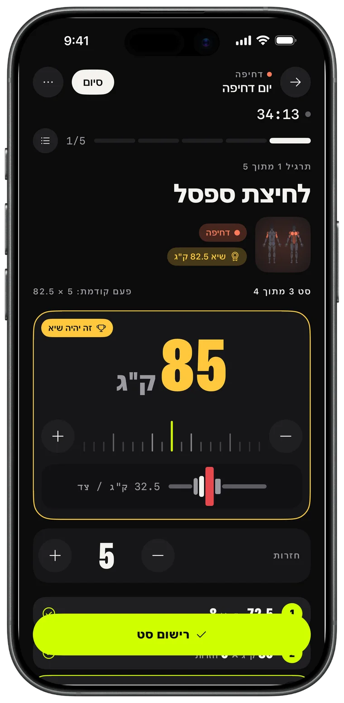
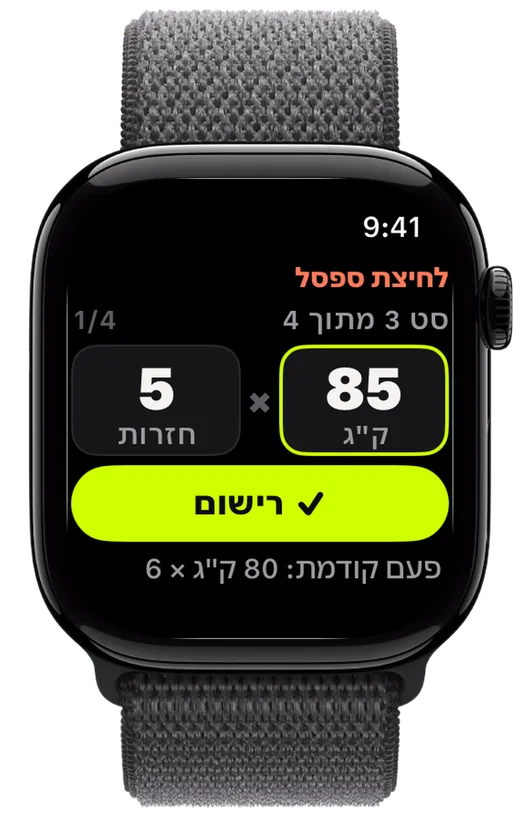
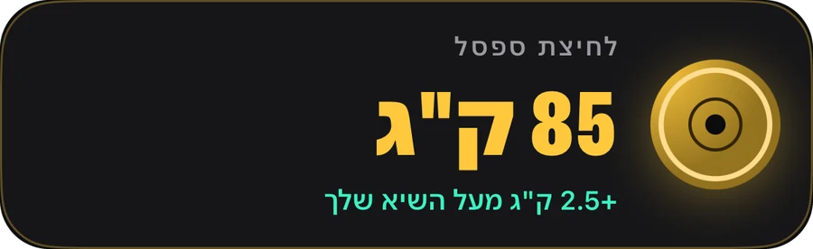
רישום
בוחרים משקולות, רושמים סט, עוקפים את הפעם הקודמת. Replex זוכר מה הרמתם ומכין את הסט הבא עוד לפניכם.
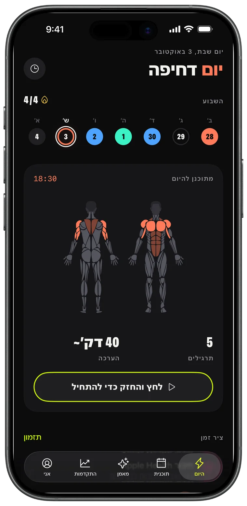
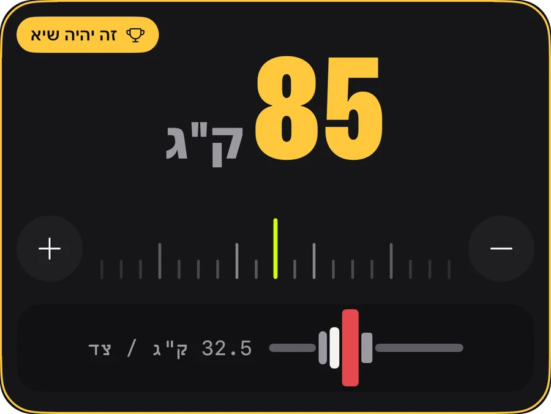
Apple Watch
משאירים את הטלפון בתיק. מסובבים את הכתר כדי לקבוע משקל וחזרות, לוחצים ״רישום״, וה-iPhone מתעדכן בזמן אמת.
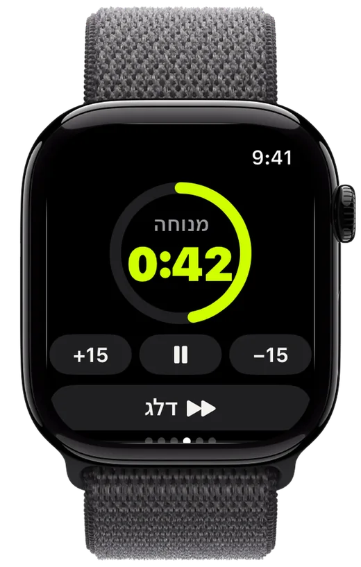
התקדמות
נפח שעולה משבוע לשבוע, כל שיא שקבעתם והמגמה של כל תרגיל — כדי שתדעו שהעבודה משתלמת.
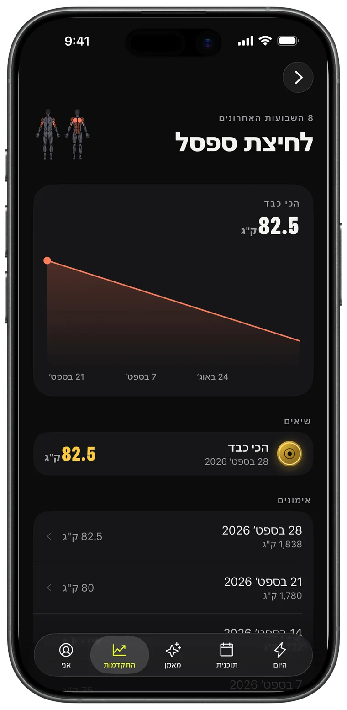
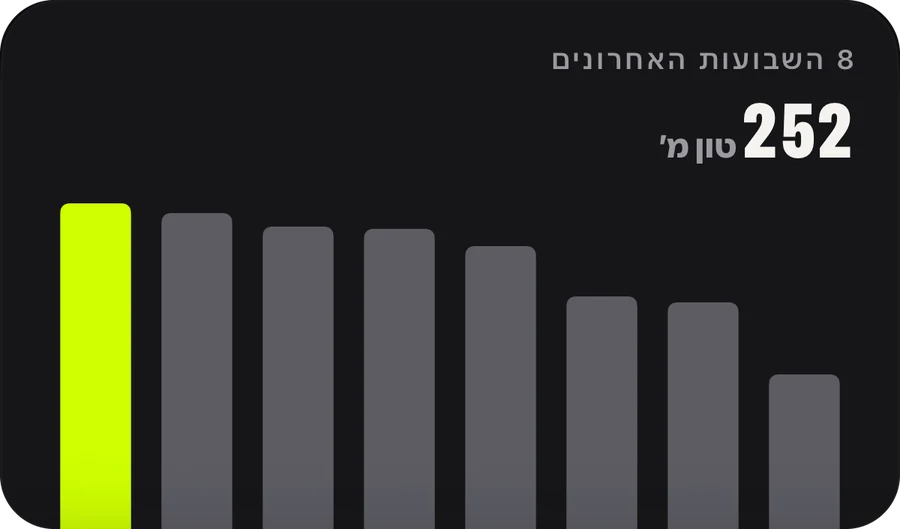
מאמן AI · Pro
מבקשים שבוע, והוא נכנס ליומן. המאמן קורא את האימונים האמיתיים שלכם — אימונים, שיאים, ריצות — ומתכנן סביבם.
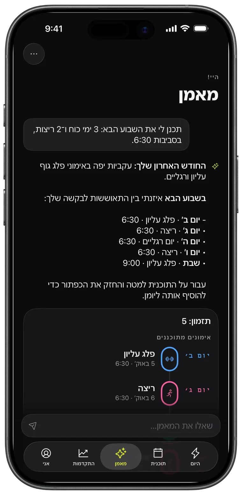
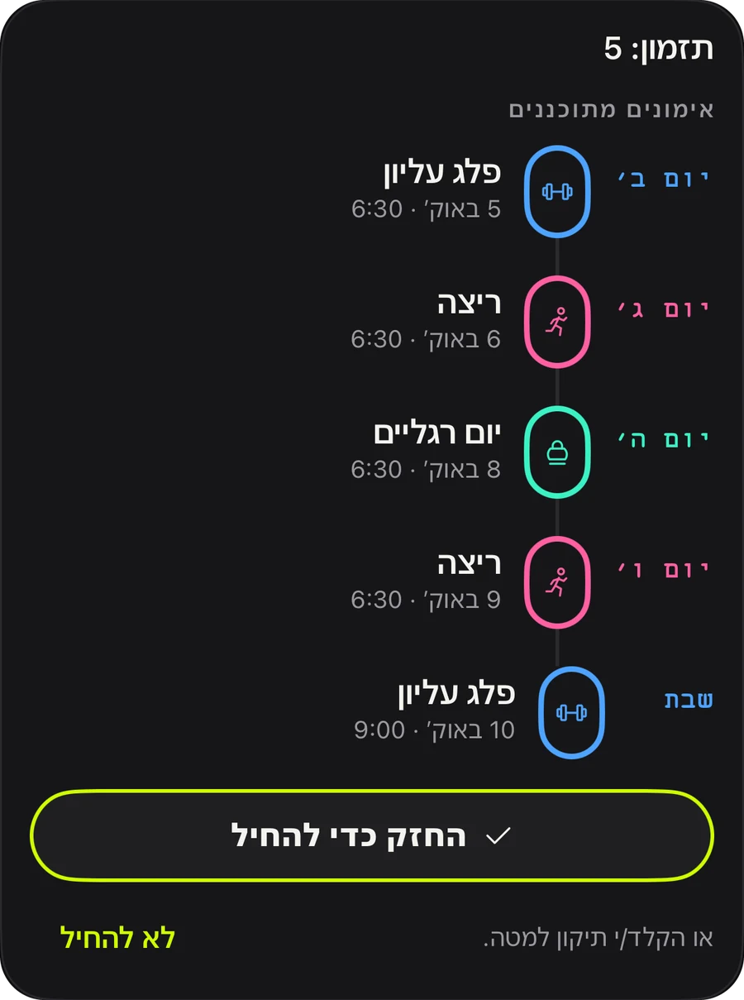
תוכניות
דחיפה, משיכה, רגליים, עליון/תחתון, גוף מלא: 44 תוכניות מוכנות להתחיל היום, או בונים תוכנית משלכם ומגדירים אותה לחזרה.
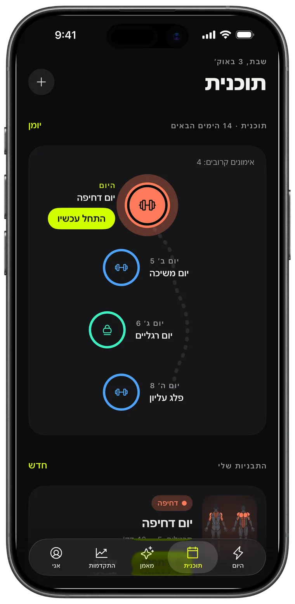
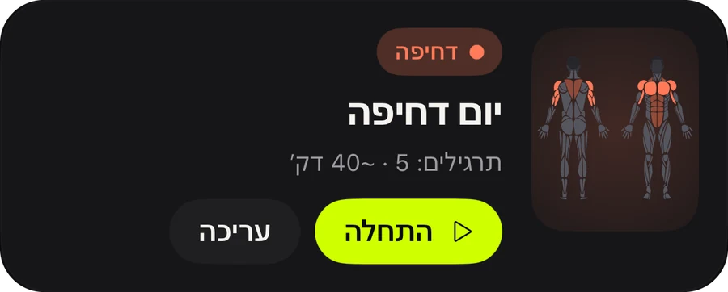
שיתוף
כל אימון שמסתיים הופך לכרטיס סטורי עם הנפח, הזמן והשיאים שלכם. מפרסמים אותו, או שומרים אותו כהוכחה.
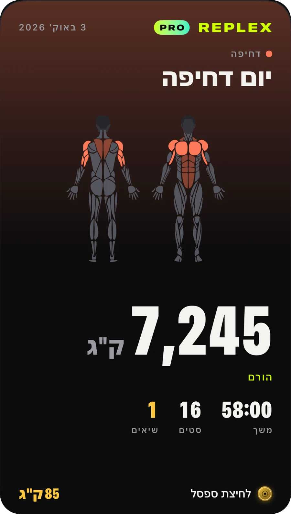
אימוני קרדיו מכל אפליקציה מופיעים עם מפות מסלול, קצב ואזורי דופק.
הסט, המנוחה והדופק שלכם במסך הנעילה וב-Dynamic Island.
אימונים, תבניות ותוכניות בכל המכשירים שלכם, פרטיים רק לכם.
רואים מה האימון מאמן עוד לפני שמתחילים, ומה כבר עבדתם השבוע.
קילוגרמים, פאונדים או סטונים; תרגילי משקל גוף ותרגילים מתוזמנים מובנים.
בהיר או כהה, ושלושה צבעי הדגשה: Volt, כחול וורוד, עם סמלי אפליקציה תואמים.
כל מה שצריך כדי לרשום ולהתקדם.
למי שמתכננים קדימה.
Pro זמין באפליקציה במנוי חודשי או שנתי, או ברכישה חד-פעמית לכל החיים. אפשר לבטל מינויים בכל עת בחשבון Apple.
הורידו את Replex ורשמו את האימון הראשון בפחות מדקה.
לא. Replex עובד במלואו ב-iPhone. עם Apple Watch אפשר לרשום סטים, להפעיל את טיימר המנוחה ולעקוב אחרי הדופק מפרק היד.
כן. השימוש ב-Replex הוא בחינם: רישום, טיימר מנוחה, 5 תוכניות משקל גוף, שיאים לאימונים האחרונים ו-5 אימוני Apple Watch. Replex Pro — חודשי, שנתי או ברכישה חד-פעמית לכל החיים — מוסיף את מאמן ה-AI, את כל 44 התוכניות, תבניות ותזמון משלכם, היסטוריה מלאה ואימוני שעון ללא הגבלה.
במכשירים שלכם וב-iCloud הפרטי שלכם. אפשר גם לשמור אימונים ב״בריאות״. מאמן ה-AI רואה רק את מה שהוא צריך כדי לענות, ורק כשאתם שואלים.
קילוגרמים, פאונדים או סטונים, ומחשבון הפלטות עובד ביחידה שבחרתם.
54, כולל עברית, אנגלית, ספרדית, פורטוגזית, צרפתית, גרמנית, יפנית, קוריאנית, סינית וערבית.